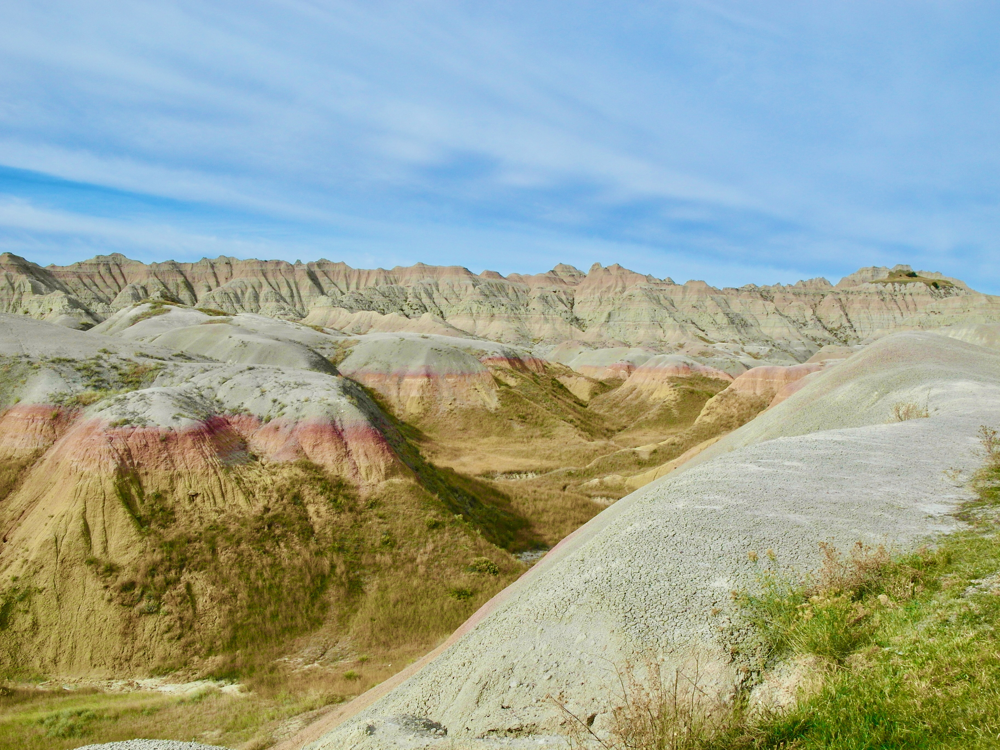

Badlands National Park, South Dakota
By James Jongs
Software Developer @
James Jongs Design and Engineering
A software developer, amateur cook, and adventurer.
Badlands Wilderness Overlook
History
Badlands are a type of dry terrain caused by wind and water erosion of soft sedimentary rocks, they have the appearance of sleeps slopes, minimal vegetation, and clearly defined layers.
Sage Creek Basin Overlook
The Badlands of South Dakota though seemingly deserted still support sparse vegetation and some life.
Big Horn SheepPrarie Dogs
The greatest part of the Badlands is the coloration of the rocks, they are pronounced and otherworldly, it looks like someone painted the landscapes with pastels.

Pastel Landscapes